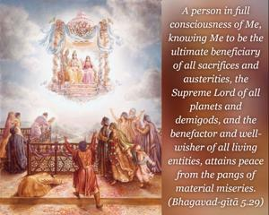
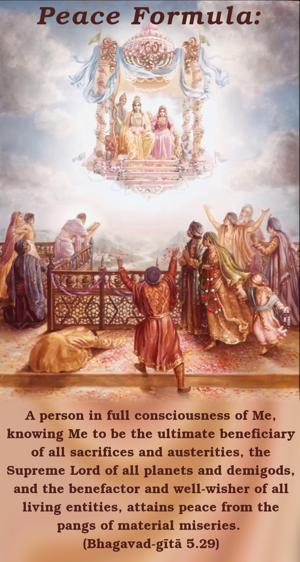
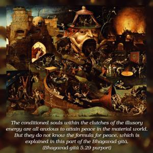
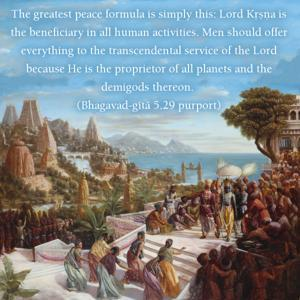
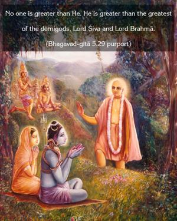
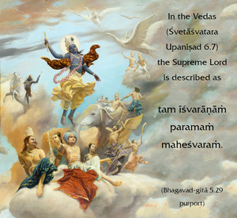
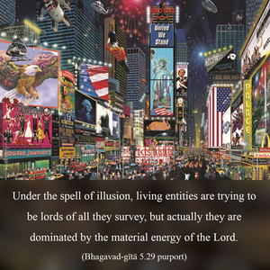

A person in full consciousness of Me, knowing Me to be the ultimate beneficiary of all sacrifices and austerities, the Supreme Lord of all planets and demigods, and the benefactor and well-wisher of all living entities, attains peace from the pangs of material miseries.







The conditioned souls within the clutches of the illusory energy are all anxious to attain peace in the material world. But they do not know the formula for peace, which is explained in this part of the Bhagavad-gītā. The greatest peace formula is simply this: Lord Kṛṣṇa is the beneficiary in all human activities. Men should offer everything to the transcendental service of the Lord because He is the proprietor of all planets and the demigods thereon. No one is greater than He. He is greater than the greatest of the demigods, Lord Śiva and Lord Brahmā. In the Vedas (Śvetāśvatara Upaniṣad 6.7) the Supreme Lord is described as tam īśvarāṇāṁ paramaṁ maheśvaraṁ. Under the spell of illusion, living entities are trying to be lords of all they survey, but actually they are dominated by the material energy of the Lord. The Lord is the master of material nature, and the conditioned souls are under the stringent rules of material nature. Unless one understands these bare facts, it is not possible to achieve peace in the world either individually or collectively. This is the sense of Kṛṣṇa consciousness: Lord Kṛṣṇa is the supreme predominator, and all living entities, including the great demigods, are His subordinates. One can attain perfect peace only in complete Kṛṣṇa consciousness.
This Fifth Chapter is a practical explanation of Kṛṣṇa consciousness, generally known as karma-yoga. The question of mental speculation as to how karma-yoga can give liberation is answered herewith. To work in Kṛṣṇa consciousness is to work with the complete knowledge of the Lord as the predominator. Such work is not different from transcendental knowledge. Direct Kṛṣṇa consciousness is bhakti-yoga, and jñāna-yoga is a path leading to bhakti-yoga. Kṛṣṇa consciousness means to work in full knowledge of one’s relationship with the Supreme Absolute, and the perfection of this consciousness is full knowledge of Kṛṣṇa, or the Supreme Personality of Godhead. A pure soul is the eternal servant of God as His fragmental part and parcel. He comes into contact with māyā (illusion) due to the desire to lord it over māyā, and that is the cause of his many sufferings. As long as he is in contact with matter, he has to execute work in terms of material necessities. Kṛṣṇa consciousness, however, brings one into spiritual life even while one is within the jurisdiction of matter, for it is an arousing of spiritual existence by practice in the material world. The more one is advanced, the more he is freed from the clutches of matter. The Lord is not partial toward anyone. Everything depends on one’s practical performance of duties in Kṛṣṇa consciousness, which helps one control the senses in every respect and conquer the influence of desire and anger. And one who stands fast in Kṛṣṇa consciousness, controlling the abovementioned passions, remains factually in the transcendental stage, or brahma-nirvāṇa. The eightfold yoga mysticism is automatically practiced in Kṛṣṇa consciousness because the ultimate purpose is served. There is a gradual process of elevation in the practice of yama, niyama, āsana, prāṇāyāma, pratyāhāra, dhāraṇā, dhyāna and samādhi. But these only preface perfection by devotional service, which alone can award peace to the human being. It is the highest perfection of life.